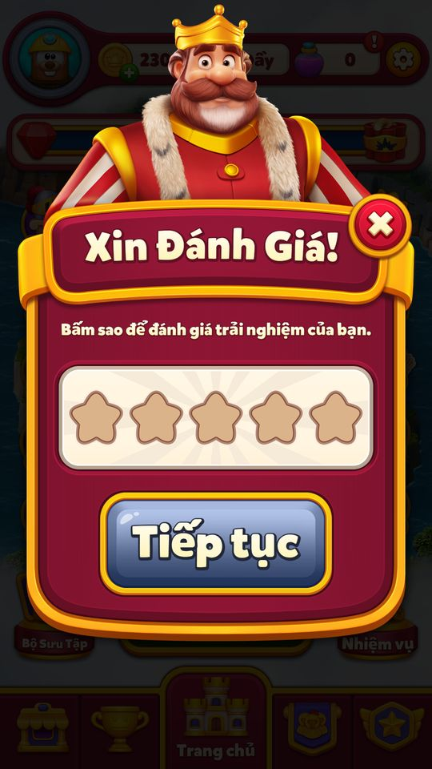

Đánh giá app
Popup mời đánh giá 1–5 sao do Nhà vua (king_body) xuất hiện ở các khoảnh khắc vui: hoàn thành district đầu tiên, thắng level, thắng với Super Electro Ball, hoàn thành…
Mô tả
- Popup mời đánh giá 1–5 sao do Nhà vua (king_body) xuất hiện ở các khoảnh khắc vui: hoàn thành district đầu tiên, thắng level, thắng với Super Electro Ball, hoàn thành district/kingdom, thắng các event (Dungeon Escape, Kingdom Duels, Hidden Path, Flying Contest, Grand Tournament, Island Race, Power Rush, Pearls of Atlantis, Cube Blast, Magic Carnival, Medal Missions).
- Chấm 5 sao → gọi hộp thoại đánh giá gốc của store (in-app review).
- Chấm dưới 5 → dialog phản hồi gợi ý liên hệ CSKH.
- Có giới hạn: chỉ từ level 15, cách nhau ít nhất 7 ngày, chặn theo mốc level (43, rồi +50), và dừng hẳn sau 3 lần chấm thấp.
- Trạng thái nén trong một mảng bit 71 bit lưu ở
ByteArrayRemoteKeyValue(khóa RateUs = 22) để đồng bộ server.
Thiết kế chi tiết
Tóm tắt thiết kế
Code Popup “Rate Us! Tap to rate your experience.” có hình nhà vua và 5 ngôi sao. Chọn 5 sao → gọi hộp thoại review gốc của Google Play ngay trong app. Chọn 1–4 sao → dialog “Contact Us!” mời liên hệ CSKH (Helpshift); sau 3 lần chấm thấp thì không bao giờ hỏi nữa.
Code Chỉ người chơi “mới” được hỏi: lần đầu xét, ai đang ở level ≤ 14 được đánh dấu Eligible, ai đã ở level > 14 bị đánh dấu NotEligible vĩnh viễn (DetermineRateUsEligibility). Không hỏi trên máy Samsung, khi mất mạng, khi đang trong Arena.
Code Nhịp: cách lần trước ít nhất 7 ngày. Popup sau trận thắng thường: lần đầu ở trận thắng đầu tiên từ level 15; sau đó cần level ≥ mốc chặn + 50 và chữ số cuối là 3, với mốc chặn = 43 sau lần đầu (nếu < 43) rồi = level lúc hiện + 50. Kết quả: khoảng level 15 → 93 → ~193 → ~293… (~100 level một lần).
Code Khoảnh khắc vui từ tính năng khác (xong district đầu, xong district/vương quốc, thắng Dungeon Escape, Kingdom Duels, Hidden Path, Flying Contest, Grand Tournament, Island Race, Power Rush, Pearls of Atlantis, Cube Blast, Magic Carnival, Medal Missions) được ghi chờ và thử ở trận thắng kế tiếp, chỉ cần level ≥ 15, ≥ mốc chặn và đủ 7 ngày. Trận thắng đầu tiên có Super Electro Ball cũng được thử một lần.
Live 11/11 Snapshot 11/11: byte array RateUs = '1' → Eligible (tài khoản mới, level thấp).
Luồng người chơi từng bước
- Xét đủ điều kiệnClientCode
DetermineRateUsEligibilitychạy một lần khi Eligibility còn NotSet: level ≤ 14 → Eligible (1), level > 14 → NotEligible (2). Log 'Determined Rate Us eligibility: {0} at level {1}.' - Ghi khoảnh khắc vuiClientCodeTính năng khác gọi
MarkPendingRateUs(origin). Ở lần thắng level kế tiếp,TryPushRateUsAfterLevelWinlấy origin đang chờ; không có thì dùng origin LevelWin (2). - Kiểm tra được phép hiệnClientCode
CanPushRateUs: không phải Samsung, Eligible, chưa hoàn tất, không ở luồng cũ, có mạng, LowRatingCount ≤ 2 (lớn hơn thì đánh dấu hoàn tất), level ≥ BlockedUntilLevel, đã qua 7 ngày từ LastShownTime, không ở trong Arena. - Luật riêng của trận thắng thườngClientCodeOrigin FirstDistrictComplete (0) đi thẳng. Origin sự kiện (≠ 0, 2): cần level ≥ 15. Origin LevelWin: Super Electro Ball đang bật và chưa thử lần nào → đổi thành SebWin (3); không thì BlockedUntilLevel = 0 cần level ≥ 15, còn lại cần level ≥ BlockedUntilLevel + 50 và level % 10 == 3.
- Hiện popup 5 saoGiao diệnCode
RateUsReviewDialog: tải hình 'king_body', nhãn analytics 'RateUsPopup_{origin}'.UpdateProgress: số lần hiện +1, LastShownTime = giờ server, BlockedUntilLevel = 43 nếu đang 0 và level < 43, ngược lại = level + 50. Ghi cờ 'RateUsPendingKillEvent' để đo người chơi thoát app ở popup. - Chấm 5 saoNgười chơiCode
OnInternalRated(5): 'High rating received. Requesting native store review.' →RequestStoreReviewAction(hộp đánh giá Google Play trong app). - Chấm 1–4 saoNgười chơiCodeLowRatingCount +1 (tới 3 thì hoàn tất).
RateUsContactDialog“Contact Us!” “We are sorry to hear that. Please contact us to share your experience.” → Contact (Helpshift, cần mạng), Later, Exit; nhãn 'FeedbackPopup_{origin}'. - App bị tắt khi đang ở popupClientCodeLần mở sau
TryCheckRateUsKillthấy cờ 'RateUsPendingKillEvent' → gửi sự kiện 'Kill' rồi xoá cờ. - Đồng bộServerCodeToàn bộ trạng thái (71 bit) nằm trong byte array RateUs (key 22), refresh từ server nên giới hạn giữ nguyên khi đổi máy.
- Playtest 12/11/2026 — bằng chứng quan sáttesterPlaytestCác ảnh là quan sát từng bước. Mode/override ghi trong appendix/playtest-20261112; chưa tương đương toàn UC đã pass.
Sau claimPowerRush xuất hiện Xin Đánh Giá; chưa chọn sao hoặc gửi đánh giá, đã đóngX. 
After offline Elite reward claim, Rate Us prompt appears. No rating or external review submitted.


Luật thời điểm (RateUsManager)
| Luật | Giá trị | Áp cho |
|---|---|---|
| Đủ điều kiện | level ≤ 14 lúc xét lần đầu | mọi origin |
| Thiết bị | không phải Samsung, có mạng, không trong Arena | mọi origin |
| Khoảng cách tối thiểu | 7 ngày (CooldownDuration) | mọi origin |
| Level tối thiểu | 15 (FirstPopupTriggerLevel) | mọi origin trừ FirstDistrictComplete |
| Mốc chặn sau lần hiện đầu | 43 (FirstBlockedUntilLevel) nếu level < 43 | mọi origin (level ≥ mốc) |
| Mốc chặn các lần sau | level lúc hiện + 50 (LevelBlockAmount) | mọi origin (level ≥ mốc) |
| Thêm cho trận thắng thường | level ≥ mốc + 50 và level % 10 == 3 | chỉ origin LevelWin |
| Dừng hẳn | 3 lần chấm dưới 5 sao | mọi origin |
Code CanPushRateUs, TryPushRateUsPopup, TryPushRateUsAfterLevelWin, UpdateProgress. Nhận định Ví dụ người chơi đều đặn: popup trận thắng ở level 15, rồi 93, rồi khoảng 193, 293…; event vui có thể chen vào sớm hơn (từ level 43, cách ≥ 7 ngày).
Origin (RateUsOriginEventType)
| Giá trị | Origin |
|---|---|
| 0 | FirstDistrictComplete (bỏ qua luật level) |
| 1 | JoyfulEvent |
| 2 | LevelWin |
| 3 | SebWin |
| 4 | DistrictComplete |
| 5 | KingdomComplete |
| 6 | DungeonEscape |
| 7 | KingdomDuels |
| 8 | HiddenPath |
| 9 | FlyingContest |
| 10 | GrandTournament |
| 11 | IslandRace |
| 12 | PowerRush |
| 13 | PearlsOfAtlantis |
| 14 | CubeBlast |
| 15 | MagicCarnival |
| 16 | MedalMissions |
Code dump.cs.
Bố cục RateUsProgress (byte array 22, 71 bit)
| Bit | Trường |
|---|---|
| 0–1 | Eligibility (0 NotSet, 1 Eligible, 2 NotEligible) |
| 2 | IsCompleted |
| 3 | ShouldTryOldRateUsFlow |
| 4–7 | LowRatingCount |
| 8–39 | LastShownTime |
| 40–59 | BlockedUntilLevel |
| 60 | HasTriedRateUsForFirstSebWin |
| 61–70 | RateUsShownCount |
CodeLive 11/11 Live 11/11 = '1' → Eligible.
Vận dụng cho game khác
- Hỏi đánh giá ở khoảnh khắc vui (vừa xây xong khu, vừa thắng event) và đặt nó ngay sau hoạt ảnh thưởng trận thắng.
- Lọc 5 sao trước khi gọi review của store; dưới 5 sao thì chuyển sang CSKH để giữ phản hồi xấu trong nội bộ và có cơ hội sửa.
- Giới hạn kép theo thời gian (7 ngày) và theo level (~100 level), dừng hẳn sau 3 lần chấm thấp: không làm phiền người đã không thích.
- Chỉ áp cho người chơi mới (level ≤ 14 khi tính năng chạy lần đầu), để người chơi cũ không bị hỏi ồ ạt khi ra bản mới.
- Nhận định Rủi ro: lọc 5 sao trước khi gọi review store có thể vi phạm chính sách “không dẫn dắt đánh giá” của một số store; cần kiểm tra chính sách hiện hành trước khi dùng lại cách này.
Ảnh cần chụp (3) — 2 ảnh đã gắn
Chụp vào screens/deep_1112/RateUs/ rồi ghi tên file vào flow[].shots.
- Hiện popup 5 sao: RateUsReviewDialog 'Rate Us!' với 5 ngôi sao và hình nhà vua
- Chấm 5 sao: Hộp đánh giá Google Play trong app sau khi chọn 5 sao
- Chấm 1–4 sao: RateUsContactDialog 'Contact Us!' với nút Contact / Later
Bảng tổng hợp mọi tính năng đã làm chi tiết: RoyalKingdom_ThietKeChiTiet.xlsx.
Mở khóa & điểm vào
Level ≥ 15 (FirstPopupTriggerLevel = 15; DetermineRateUsEligibility quyết một lần khi Eligibility = 0: level ≤ 14 → Eligible, > 14 → NotEligible) và RateUsProgress.Eligibility = Eligible (1). Riêng origin FirstDistrictComplete (0) bỏ qua kiểm tra level.
Điểm vào:
- Sau khi thắng level (
TryPushRateUsAfterLevelWinvới origin đang chờ) - Hoàn thành district / kingdom (origin 0, 4, 5)
- Thắng / nhận thưởng event (origin 6–16)
- Dialog
RateUsReviewDialog(5 ngôi sao) →RateUsContactDialoghoặc store review
Cách hoạt động
- Các tính năng gọi
MarkPendingRateUs(origin)khi có khoảnh khắc vui; ở lần thắng level tiếp theoTryPushRateUsAfterLevelWinlấy origin chờ và gọi kiểm tra. - Hoặc gọi thẳng
TryPushRateUsPopup(eventType, shouldPushToNext, isAuto). CanPushRateUsyêu cầu: Eligibility = Eligible, chưa hoàn tất (IsCompleted = false), không ở luồng cũ, không phải máy Samsung, có mạng,LowRatingCount≤ 2 (nếu > 2 thì đánh dấu hoàn tất), level ≥BlockedUntilLevel, đã quaCooldownDuration = 7 ngàytừLastShownTime, và không đang ở Arena (IsUserInArena).- Sau đó: origin khác 0 và 2 cần level ≥ 15; nếu chưa từng chặn (
BlockedUntilLevel = 0) thì level ≥ 15 là đủ, nếu đã chặn thì cần level ≥ BlockedUntilLevel + 50 và level có chữ số cuối là 3 (level % 10 == 3). PushInternalPopupđưaRateUsReviewDialogvào hàng đợi dialog,UpdateProgresstăngRateUsShownCount, ghiLastShownTime, đặtBlockedUntilLevel= 43 ở lần đầu nếu level < 43, ngược lại = level hiện tại + 50.- Khi người chơi chấm:
OnInternalRated(stars); 5 sao (ThresholdRating) → 'High rating received. - Requesting native store review.' (
RequestStoreReviewAction); dưới 5 →LowRatingCount++, tới 3 thìIsCompleted = true, và mởRateUsContactDialog(Contact Us → Helpshift, Later, Exit). RateUsKillLocalDataghiRateUsPendingKillEventkhi dialog mở; nếu app bị tắt giữa chừng, lần mở sauTryCheckRateUsKillgửi sự kiện 'Kill'.
Số liệu chính
| Chỉ số | Giá trị | Nguồn |
|---|---|---|
| Level tối thiểu | 15 | FirstPopupTriggerLevel · code const |
| Mốc chặn sau lần hiện đầu (nếu level < 43) | 43 | FirstBlockedUntilLevel · code const |
| Khoảng level chặn giữa các lần | 50 | LevelBlockAmount · code const |
| Số lần chấm thấp trước khi dừng | 3 | MaxLowRatingCount · code const |
| Chỉ hiện ở level có chữ số cuối 3 sau khi đã chặn (code: level % 10 != 3 → false) | 3 | LevelMod · code const |
| Số sao chuyển sang review store | 5 | ThresholdRating · code const |
| Khoảng cách tối thiểu giữa 2 lần hiện | 7 ngày | CooldownDuration · code const |
Use case (9)
Bấm vào từng use case để mở. Mở/đóng tất cả
UC-01 Xác định đủ điều kiện
Các bước- DetermineRateUsEligibility (Bind / FillWithLocalUser / RefreshProgress): nếu Eligibility ≠ 0 thì bỏ qua
- Level hiện tại ≤ 14 → Eligible (1); > 14 → NotEligible (2)
- Log 'Determined Rate Us eligibility: {0} at level {1}.'
| Actor | System |
|---|---|
| Trigger | Level thay đổi / FillWithLocalUser |
| Điều kiện | Eligibility = NotSet (0) — chỉ quyết một lần, đã đặt thì giữ nguyên |
| Kết quả | Eligible (1) hoặc NotEligible (2) |
| Quy tắc / số liệu | Không có AB/random: người cài mới (lần đầu chạy ở level thấp) được Eligible; tài khoản đã quá level 14 khi bản này lần đầu chạy thì NotEligible vĩnh viễn |
| Evidence | RateUsManager.DetermineRateUsEligibility; RateUsProgress.set_Eligibility; RateUsManager.Bind; RateUsManager.FillWithLocalUser |
UC-02 Đánh dấu khoảnh khắc vui
Các bước- Feature gọi MarkPendingRateUs(origin) → hasPendingRateUsRequest = true
- Lần thắng level sau: TryPushRateUsAfterLevelWin → TryPushRateUsPopup(pendingOrigin)
| Actor | System |
|---|---|
| Trigger | Hoàn thành district, thắng event… |
| Kết quả | Popup hiện sau khi về Home từ trận thắng |
| Quy tắc / số liệu | RateUsOriginEventType: 0 FirstDistrictComplete, 1 JoyfulEvent, 2 LevelWin, 3 SebWin, 4 DistrictComplete, 5 KingdomComplete, 6 DungeonEscape, 7 KingdomDuels, 8 HiddenPath, 9 FlyingContest, 10 GrandTournament, 11 IslandRace, 12 PowerRush, 13 PearlsOfAtlantis, 14 CubeBlast, 15 MagicCarnival, 16 MedalMissions |
| Evidence | RateUsManager.MarkPendingRateUs; RateUsManager.TryPushRateUsAfterLevelWin |
UC-03 Kiểm tra được phép hiện
Các bước- CanPushRateUs: không phải máy Samsung (DeviceHelper.IsSamsung), Eligible, !IsCompleted, !ShouldTryOldRateUsFlow, có mạng (NetworkUtility.NoInternet = false), LowRatingCount ≤ 2, level ≥ BlockedUntilLevel, now − LastShownTime ≥ 7 ngày, không đang ở Arena (ArenaManager.IsUserInArena)
- Origin ≠ 0, 2: level ≥ 15
- Super Electro Ball đang bật lần đầu: set HasTriedRateUsForFirstSebWin
- Chỉ với origin LevelWin (2): BlockedUntilLevel = 0 → cần level ≥ 15; khác 0 → cần level ≥ BlockedUntilLevel + 50 và level % 10 == 3. Origin FirstDistrictComplete (0) đẩy thẳng; JoyfulEvent (1) / DistrictComplete (4) chỉ cần level ≥ 15 (cộng điều kiện CanPushRateUs)
| Actor | System |
|---|---|
| Trigger | TryPushRateUsPopup |
| Kết quả | PushInternalPopup → RateUsReviewDialog |
| Quy tắc / số liệu | CooldownDuration = DaysInMs(7); FirstPopupTriggerLevel = 15; LevelBlockAmount = 50 |
| Evidence | RateUsManager.TryPushRateUsPopup; RateUsManager.CanPushRateUs; RateUsManager..cctor |
UC-04 Hiện popup và ghi tiến trình
Các bước- ShowRateUsReviewDialogAction (shouldPushToNext, isAuto)
- RateUsReviewDialog.Init: tải 'liveops/other/images/king_body', nhãn 'RateUsPopup_{origin}', RateUsKillLocalData.Save
- UpdateProgress: RateUsShownCount + 1, LastShownTime = giờ server, BlockedUntilLevel = 43 nếu lần đầu và level < 43, ngược lại level + 50
| Actor | System |
|---|---|
| Trigger | PushInternalPopup |
| Kết quả | Lưu ByteArrayRemoteKeyValue 22 |
| Quy tắc / số liệu | FirstBlockedUntilLevel = 43; BlockedUntilLevel tối đa 2^20 − 1 |
| Evidence | RateUsManager.PushInternalPopup; RateUsReviewDialog.Init; RateUsManager.UpdateProgress |
UC-05 Chấm 5 sao → review của store
Các bước- RateUsStarView.OnClick → RateUsManager.OnInternalRated(5)
- 'High rating received. Requesting native store review.'
- RequestStoreReviewAction.Execute (bỏ qua nếu user đã thấy dialog migrate Attack cũ)
| Actor | Player |
|---|---|
| Trigger | Chọn 5 sao |
| Kết quả | Hộp đánh giá Google Play hiện trong app |
| Quy tắc / số liệu | ThresholdRating = 5 |
| Evidence | RateUsManager.OnInternalRated; RequestStoreReviewAction.Execute |
UC-06 Chấm thấp → phản hồi / CSKH
Các bước- OnInternalRated(stars < 5): LowRatingCount + 1; > 2 → SetBit IsCompleted
- RateUsContactDialog: 'RateUsFeedbackPopupText1/2', nhãn 'FeedbackPopup_{origin}'
- Contact Us → Helpshift (cần mạng, nếu không: CheckConnectionText); Later; Exit
| Actor | Player |
|---|---|
| Trigger | Chọn 1–4 sao |
| Kết quả | Sau 3 lần chấm thấp popup không hiện nữa |
| Quy tắc / số liệu | MaxLowRatingCount = 3 |
| Evidence | RateUsManager.OnInternalRated; RateUsContactDialog.OnContactClicked; RateUsContactDialog.OnLaterClicked; RateUsContactDialog.OnCloseButtonClicked |
UC-07 Luồng cũ: review store trực tiếp
Các bước- TryShowNativeStoreReview: 'Requesting native store review (old flow) at level {0}.'
- ShouldTryNativeFlow(oldFlow)
| Actor | System |
|---|---|
| Trigger | ShouldTryOldRateUsFlow = true |
| Kết quả | Bỏ popup sao, gọi thẳng review store |
| Evidence | RateUsManager.TryShowNativeStoreReview; RateUsManager.ShouldTryNativeFlow |
UC-08 App bị tắt khi đang ở popup
Các bước- RateUsManager.Init → TryCheckRateUsKill
- RateUsKillLocalData.TryLoad → gửi analytics 'Kill' → Clear
| Actor | System |
|---|---|
| Trigger | Mở lại app |
| Điều kiện | Có RateUsPendingKillEvent |
| Kết quả | Đo tỉ lệ thoát app ở popup (ví dụ đi sang store) |
| Evidence | RateUsManager.TryCheckRateUsKill; RateUsKillLocalData.TryLoad; RateUsKillLocalData.Save |
UC-09 Đồng bộ trạng thái với server
Các bước- RefreshProgress(refreshResponse) đọc ByteArray RateUs
- ClearCachedData khi đổi user
| Actor | Server |
|---|---|
| Trigger | RefreshResponse |
| Kết quả | Giữ giới hạn khi chơi trên máy khác |
| Evidence | RateUsManager.RefreshProgress; RateUsManager.GetByteArrayProgress; RateUsManager.ClearCachedData |
Cấu hình (11)
Gộp mọi nguồn: const trong code, JSON mặc định trong Resources, config class, storage key, AB test, giá trị server trong snapshot thiết bị 11/11/2026.
| Nguồn | Key | Kiểu | Giá trị | Ý nghĩa | Nơi định nghĩa |
|---|---|---|---|---|---|
| code const | FirstPopupTriggerLevel | int | 15 | Level tối thiểu | RateUsManager |
| code const | FirstBlockedUntilLevel | int | 43 | Mốc chặn sau lần hiện đầu (nếu level < 43) | RateUsManager.UpdateProgress |
| code const | LevelBlockAmount | int | 50 | Khoảng level chặn giữa các lần | RateUsManager |
| code const | MaxLowRatingCount | int | 3 | Số lần chấm thấp trước khi dừng | RateUsManager.CanPushRateUs (2 < LowRatingCount) |
| code const | LevelMod | int | 3 | Chỉ hiện ở level có chữ số cuối 3 sau khi đã chặn (code: level % 10 != 3 → false) | RateUsManager.TryPushRateUsPopup |
| code const | ThresholdRating | int | 5 | Số sao chuyển sang review store | RateUsManager.OnInternalRated |
| code const | CooldownDuration | long ms | 7 ngày | Khoảng cách tối thiểu giữa 2 lần hiện | RateUsManager..cctor (DaysInMs(7)) |
| config class | RateUsProgress bit layout | 71 bit | 0–1 Eligibility; 2 IsCompleted; 3 ShouldTryOldRateUsFlow; 4–7 LowRatingCount; 8–39 LastShownTime; 40–59 BlockedUntilLevel; 60 HasTriedRateUsForFirstSebWin; 61–70 RateUsShownCount | Trạng thái đồng bộ | RateUsProgress |
| config class | RateUsEligibility | enum | 0 NotSet, 1 Eligible, 2 NotEligible | dump.cs | |
| server info (live 11/11) | ByteArrayRemoteKeyValue 'ByteArrayKeyName22' (RateUs) | string | '1' (byte đầu = 1 → Eligibility = Eligible — suy luận) | Tài khoản mới đã được đánh dấu đủ điều kiện | U_<id>.ByteArrayRemoteKeyValue |
| storage key | RateUsPendingKillEvent | string | Đánh dấu đang mở popup để phát hiện kill | UserKeys / RateUsKillLocalData |
Backend / server
| Command | Chiều | Mục đích |
|---|---|---|
SetKeyValueRequest (ByteArrayKeyName.RateUs = 22) | client→server | Đồng bộ RateUsProgress |
Định dạng request/response: Giao thức backend.
Giao diện (UI)
| Element | Class | Mục đích |
|---|---|---|
| Popup 5 sao | Royal.Scenes.Home.Ui.Dialogs.RateUs.RateUsReviewDialog | Chấm sao, hình nhà vua |
| Ngôi sao | Royal.Scenes.Home.Ui.Dialogs.RateUs.RateUsStarView | Animation và âm thanh từng sao |
| Dialog phản hồi | Royal.Scenes.Home.Ui.Dialogs.RateUs.RateUsContactDialog | Contact Us / Later / Exit |
| Review store | Royal.Scenes.Home.Ui.Dialogs.Review.RequestStoreReviewAction | Gọi in-app review |
Analytics (2)
| Event | Tham số | Khi nào |
|---|---|---|
UserAction | action = RateUsPopup_{origin} / FeedbackPopup_{origin}, st1 = ContactUs / Later / Exit / rate{n} | Hiện popup, chấm sao, bấm nút (suy luận từ chuỗi) |
Kill (UserAction) | origin | App bị tắt khi popup đang mở |
Storage keys
ByteArrayKeyName22 (RateUs) RateUsPendingKillEvent
Chưa đọc được / ghi chú
- Kết hợp BlockedUntilLevel = level + 50 (UpdateProgress) với điều kiện level ≥ BlockedUntilLevel + 50 (TryPushRateUsPopup) cho khoảng cách ~100 level — cần kiểm lại trên thiết bị.
- Danh sách nơi gọi MarkPendingRateUs với từng origin chưa liệt kê.
Tính năng liên quan
Hỗ trợ (Helpshift) Màn hình Home Xây vương quốc (Kingdom) Super Electro Ball Dungeon Escape Kingdom Duels Hidden Path Flying Contest Grand Tournament Island Race Power Rush Pearls of Atlantis Cube Blast (mini-game) Magic Carnival (mini-game) Medal Missions Đấu trường (Champions Arena)
Nguồn đã đọc
- features/RateUsManager.md
- PseudoC/.../Royal/Player/Context/Units/RateUs/RateUsManager.c, RateUsProgress.c
- PseudoC/.../Home/Ui/Dialogs/RateUs/*.c, Review/RequestStoreReviewAction.c
- facts/runtime/live_1111 U_<id>.ByteArrayRemoteKeyValue